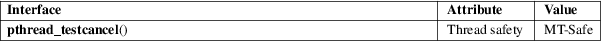

pthread_testcancel − request delivery of any pending cancelation request
POSIX threads library (libpthread, −lpthread)
#include <pthread.h>
void pthread_testcancel(void);
Calling pthread_testcancel() creates a cancelation point within the calling thread, so that a thread that is otherwise executing code that contains no cancelation points will respond to a cancelation request.
If cancelability is disabled (using pthread_setcancelstate(3)), or no cancelation request is pending, then a call to pthread_testcancel() has no effect.
This function does not return a value. If the calling thread is canceled as a consequence of a call to this function, then the function does not return.
This function always succeeds.
For an explanation of the terms used in this section, see attributes(7).

POSIX.1-2008.
glibc 2.0. POSIX.1-2001.
See pthread_cleanup_push(3).
pthread_cancel(3), pthread_cleanup_push(3), pthread_setcancelstate(3), pthreads(7)